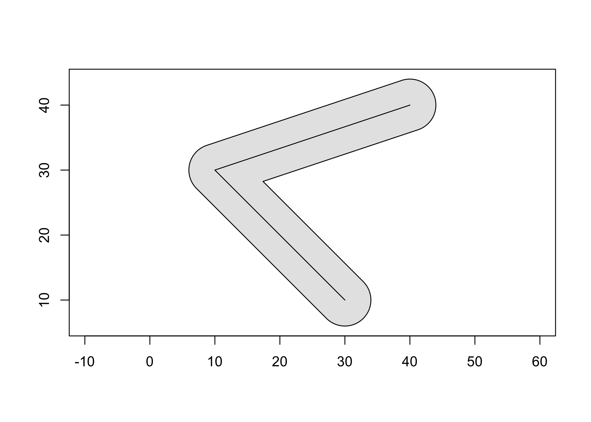

The goal of geos is to provide access to the GEOS C API by vectorizing the C functions for use in R. See the package function reference for which functions are implemented in the R API.
Installation
You can install the released version of geos from CRAN with:
install.packages("geos")And the development version from GitHub with:
# install.packages("remotes")
remotes::install_github("paleolimbot/geos")If you can load the package, you’re good to go!
Example
Buffer a line and plot it!
line <- as_geos_geometry("LINESTRING (30 10, 10 30, 40 40)")
plot(geos_buffer(line, distance = 4), col = "grey90")
plot(line, add = T)
The geos package is designed to work with dplyr package, so you can work with geometry vectors as a data frame column:
library(dplyr)
#>
#> Attaching package: 'dplyr'
#> The following objects are masked from 'package:stats':
#>
#> filter, lag
#> The following objects are masked from 'package:base':
#>
#> intersect, setdiff, setequal, union
# map data from the maps package via ggplot2
states_df <- as_tibble(ggplot2::map_data("state"))
states_df
#> # A tibble: 15,537 × 6
#> long lat group order region subregion
#> <dbl> <dbl> <dbl> <int> <chr> <chr>
#> 1 -87.5 30.4 1 1 alabama <NA>
#> 2 -87.5 30.4 1 2 alabama <NA>
#> 3 -87.5 30.4 1 3 alabama <NA>
#> 4 -87.5 30.3 1 4 alabama <NA>
#> 5 -87.6 30.3 1 5 alabama <NA>
#> 6 -87.6 30.3 1 6 alabama <NA>
#> 7 -87.6 30.3 1 7 alabama <NA>
#> 8 -87.6 30.3 1 8 alabama <NA>
#> 9 -87.7 30.3 1 9 alabama <NA>
#> 10 -87.8 30.3 1 10 alabama <NA>
#> # … with 15,527 more rows
states_df %>%
group_by(region, group) %>%
summarise(geometry = geos_make_polygon(long, lat)) %>%
summarise(geometry = geos_make_collection(geometry, "multipolygon"))
#> `summarise()` has grouped output by 'region'. You can override using the
#> `.groups` argument.
#> # A tibble: 49 × 2
#> region geometry
#> <chr> <geos_geom>
#> 1 alabama <MULTIPOLYGON [-88.476 30.241...-84.901 35.013]>
#> 2 arizona <MULTIPOLYGON [-114.809 31.347...-109.040 37.002]>
#> 3 arkansas <MULTIPOLYGON [-94.624 32.997...-89.651 36.509]>
#> 4 california <MULTIPOLYGON [-124.383 32.538...-114.133 42.021]>
#> 5 colorado <MULTIPOLYGON [-109.063 36.984...-102.044 41.018]>
#> 6 connecticut <MULTIPOLYGON [-73.722 41.012...-71.780 42.049]>
#> 7 delaware <MULTIPOLYGON [-75.802 38.457...-75.052 39.849]>
#> 8 district of columbia <MULTIPOLYGON [-77.137 38.806...-76.931 38.996]>
#> 9 florida <MULTIPOLYGON [-87.640 25.130...-80.042 31.008]>
#> 10 georgia <MULTIPOLYGON [-85.611 30.355...-80.844 34.996]>
#> # … with 39 more rowsThe easiest way to get data into and out of the package is using the sf package.
library(sf)
#> Linking to GEOS 3.11.0, GDAL 3.5.1, PROJ 9.0.1; sf_use_s2() is TRUE
nc <- read_sf(system.file("shape/nc.shp", package = "sf")) %>%
st_transform(32119) # North Carolina state plane, m.
nc_geos <- as_geos_geometry(nc)
nc_geos %>%
geos_make_collection() %>%
geos_unary_union() %>%
st_as_sfc(nc_state)
#> Geometry set for 1 feature
#> Geometry type: MULTIPOLYGON
#> Dimension: XY
#> Bounding box: xmin: 123829 ymin: 14744.69 xmax: 930521.8 ymax: 318259.9
#> Projected CRS: NAD83 / North Carolina
#> MULTIPOLYGON (((138426 177699.3, 145548.6 17783...